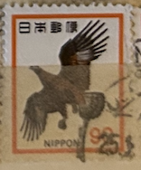
| SOURCE | TITLE| IMAGE MATCH | click to source page |
| Yahoo! JAPAN | Yahoo!オークション -「切手 イヌワシ」の落札相場・落札価格 | 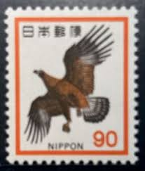 |
| eBay | Japan 1973 - Mihon Overprint - Specimen Overprint (1094) Mint never Hinged | eBay | 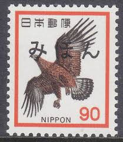 |
| Colnect | Stamp: Japanese Golden Eagle (Aquila chrysaetos japonica) (Japan(Fauna, Flora and Cultural Heritage) Mi:JP 1192,Sn:JP 1077,Yt:JP 1094,Sg:JP 1237,Sak:JP 440 📮 | 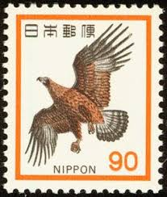 |
| Shutterstock | Japan Circa 1962a Post Stamp Printed Stock Photo 64187929 | Shutterstock | 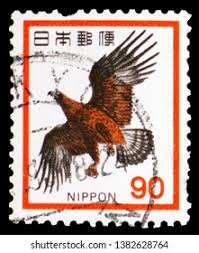 |
| Alamy | Nippon/Japanese postage stamp with Golden Eagle and ink stamp, South Africa Stock Photo - Alamy | 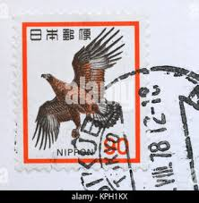 |
| kidzkingdom.pk | ◇ 新動植物国宝・1972年 イヌワシ 90円 下CM付 NH極美品 | 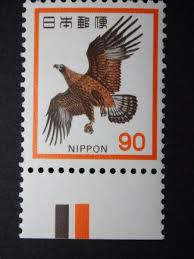 |
| Alamy | Postage stamp japan hi-res stock photography and images - Alamy | 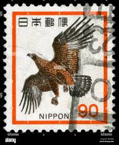 |
| Alamy | A stamp printed in Japan shows image of a eagle - bird of prey, circa 1975 Stock Photo - Alamy | 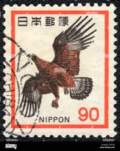 |
| Shutterstock | Japanese Bird Print: Over 515 Royalty-Free Licensable Stock Photos | Shutterstock | 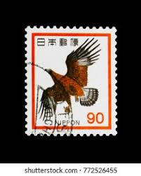 |
| Shutterstock | Estampes Japonaises: Over 6,010 Royalty-Free Licensable Stock Photos | Shutterstock | 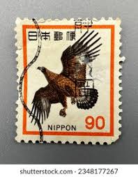 |
| Shutterstock | Japan Stamps: Over 10,004 Royalty-Free Licensable Stock Photos | Shutterstock | 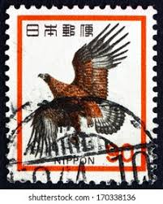 |
| eBay UK | Malaysia/ Singapore/Nippon Postage Stamps In Good Shape (21stamps)UK Seller # 52 | eBay UK | 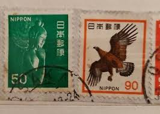 |
| Yahoo! JAPAN | Yahoo!オークション -「大磯」(切手、はがき) の落札相場・落札価格 | 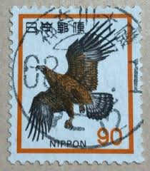 |
| Shutterstock | 5+ Thousand Japanese Postage Stamp Royalty-Free Images, Stock Photos & Pictures | Shutterstock | 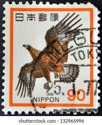 |
| Alamy | Postage stamp japan hi-res stock photography and images - Alamy | 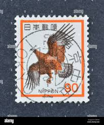 |
| Yahoo! JAPAN | Yahoo!オークション -「90円切手」の落札相場・落札価格 | 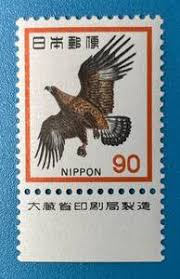 |
| eBay | Japan 1971, Wild Bird, 90-Yen Used (No Gum), FREE SHIPPING | eBay | 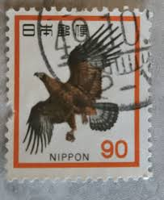 |
| Alamy | Photo of an old used Japanese postage stamp with a golden eagle bird illustration Stock Photo - Alamy | 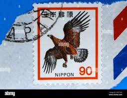 |
| eBay | China 1987 T114 Birds of Prey 4v Stamps 中国猛禽新票 (Lot A) | eBay | 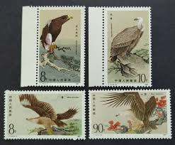 |
| Todocolección | butan nº 627, artesania: campanilla y tetera, n - Compra venta en todocoleccion | 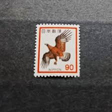 |
| Todocolección | japon serie nº 1232 de 1977 nuevo - Buy Antique stamps of Japan on todocoleccion | 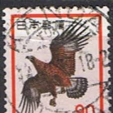 |
| eBay | Specimen, Japan Sc2764i UNESCO World Heritage Site, Kyoto, Nijo Castle | eBay | 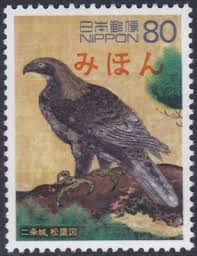 |
| Poppe Stamps | Poppe Stamps: China (Communist), 1987, 3484, Birds - stamps for sale by theme and country | 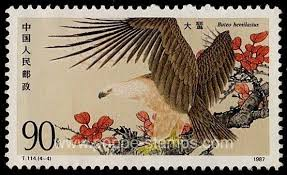 |
| Xabusiness.com | China animal stamps | 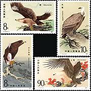 |
| eBay | CHINA 1987 (T114) BIRDS OF PREY * set of 4 stamps #2078-81, Mint, NH | eBay | 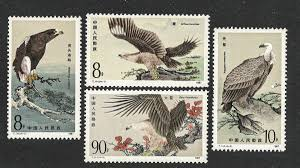 |
| eBay | CHINA - 1987 BIRDS OF THE PREY / BIRDS 4V MNH | eBay | 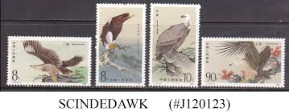 |
| eBay | Китайские марки с птицами - огромный выбор по лучшим ценам | eBay | 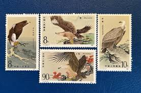 |
| eBay | CHINA 1987 BIRDS OF PREY SET (x4) MINT INCLUDING JOINED PAIR (771/D50075) | eBay | 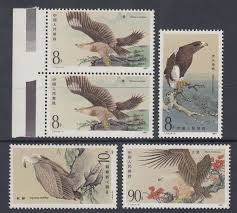 |
| Postcrossing | Share your Birds on stamps - Mail, stamps & postal info - Postcrossing Community | 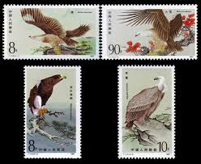 |
| eBay | CHINA - PRC Sc 2078-81 (T114) NH ISSUE OF 1987 - BIRDS - EAGLES | eBay | 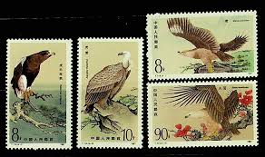 |
| allnumis.com | Stamps Catalog - List of stamps for Birds, China, Peoples Republic | 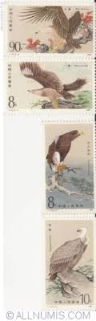 |
| HipStamp | China PRC 1987 T114 Birds of Prey Stamps Set of 4 Fine Used | Asia - China, Stamp / HipStamp | 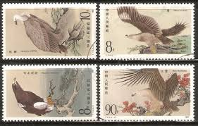 |
| eBay | CHINA - 1987 BIRDS OF THE PREY - BLOCK OF 4 - 4V - MINT NH | eBay | 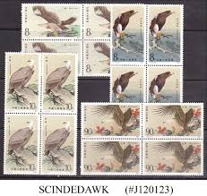 |
| eBay | Japanese Space Stamps for sale | eBay | 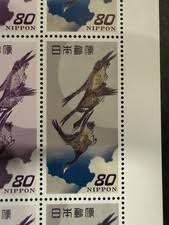 |
| 560 China Stamps ideas to save today | postage stamps, china, stamp and more | 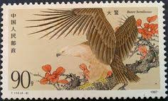 | |
| eBay | Japanese Stamp Sheet Rare Birds Series 3 Crested Serpent Eagle, 20 Stamps | eBay | 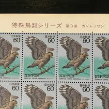 |
| Flickr | li_baoxin | Flickr | 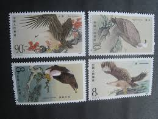 |
| postbeeld.com | Stamp 1987, China People's Republic Birds 4v, 1987 - Collecting Stamps - PostBeeld - Online Stamp Shop - Collecting | 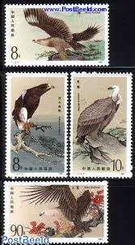 |
| eBay | Lot of 16 New/Unused vintage Birds of Prey Chinese Stamps (21) | eBay | 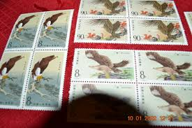 |
| Find Your Stamps Value | Postal History Series: “Moon and Geese,” Print by Hiroshige - 郵便切手の歩み：月に雁、広重 80y Purple stamp price, value | 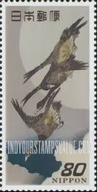 |
| Wikimedia.org | File:Patriotic aviation fund post card stamp.JPG - Wikimedia Commons | 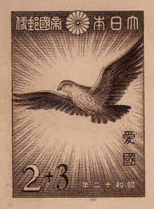 |
| Luk Stamps Sale - Luk Stamps Sale added a new photo. | 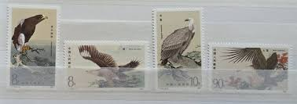 | |
| eBay | PR China 1987 T114 Scott 2078-81 The Birds of Prey Pair MNH VF OG | eBay | 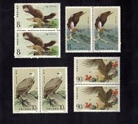 |
| eBay | China 1987 T114 Stamp China Bird of Prey Stamps 4PCS | eBay | 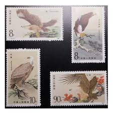 |
| eBay | China PRC Bird of Prey #2078 - 2081 set in Block of 4 MNH OG CV$32.00 #a7076 | eBay | 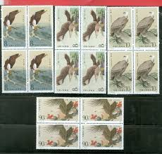 |
| eBay | Lot of 16 New/Unused vintage Birds of Prey Chinese Stamps (21) | eBay | 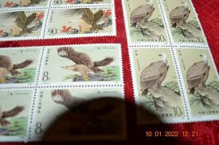 |
| Find Your Stamps Value | World Heritage Sites: Detail from “Hawks on Pine,” Nijo Castle - 世界遺産、二条城 松鷹図 80y Multicolored stamp price, value | 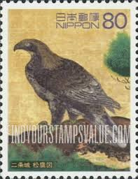 |
| Xabusiness.com | T114 Scott 2078-81 The Birds of Prey - China Stamps | 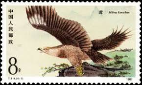 |
| eBay | 1987 PRC China SC 2078-2081 T114 Birds of Pray - Block Set, Inscriptions - MNH | eBay | 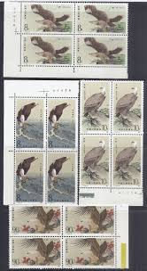 |
| China 1987 bird first day cover | ||
| trducks.com | 1981 Buzzard Council of America | |
| eBay | Vintage Birds of Prey Chinese Stamps (22) | eBay | |
| wopa-plus.com | Salbuurun - Traditional Kyrgyz Hunting (Soaring Eagle, Hovering Falcon, Prey catching) | Kyrgyzstan KEP Stamps | Worldwide Stamps, Coins Banknotes and Accessories for Collectors | WOPA+ | |
| eBay | Stamps Peoples Republic of China Scott 2078-81 never hinged | |
| eBay | Briefmarken Liechtenstein 2019 Mi 1933-1934 Paar (kompl.Ausg.) postfrisch Vögel | eBay | |
| eBay | T114 Birds of Prey Set on pte FDC to S'pore - Yunnan-Kunming cds 1987.3.20 (b57) | eBay | |
| Blogger.com | Stamp Art: Miriam Karoly | |
| eBay | Raptors White Bird Postal Stamps for sale | eBay | |
| eBay | First Day of Issue A US Stamp Covers for sale | eBay |
{kind=link}